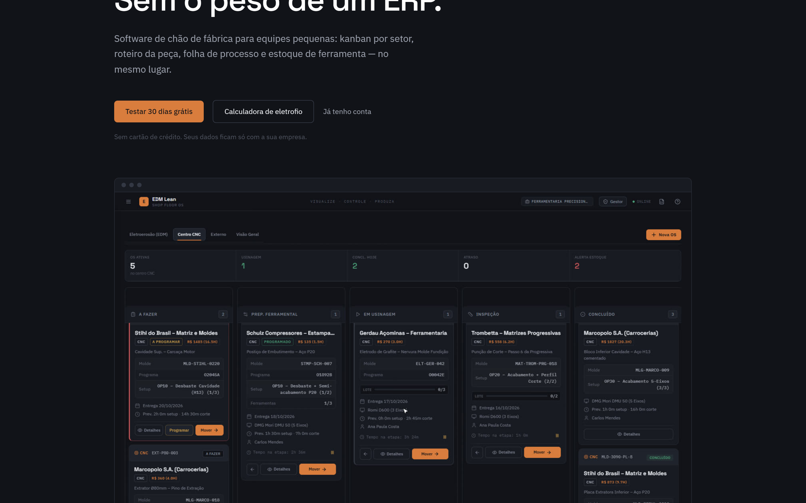
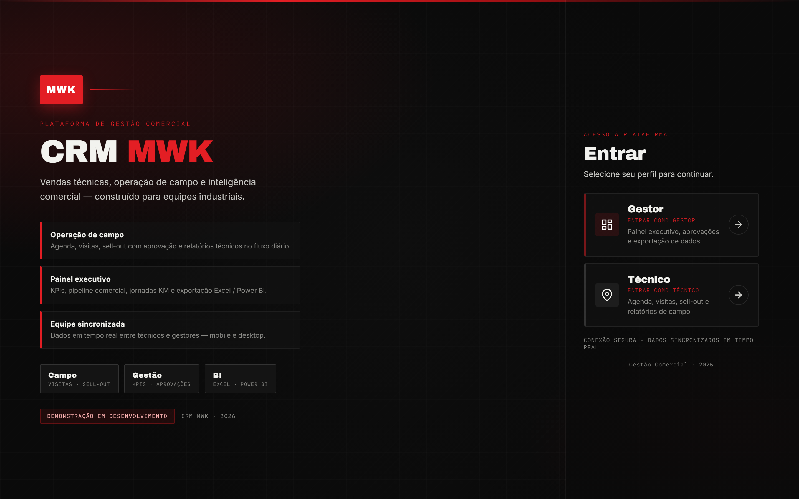
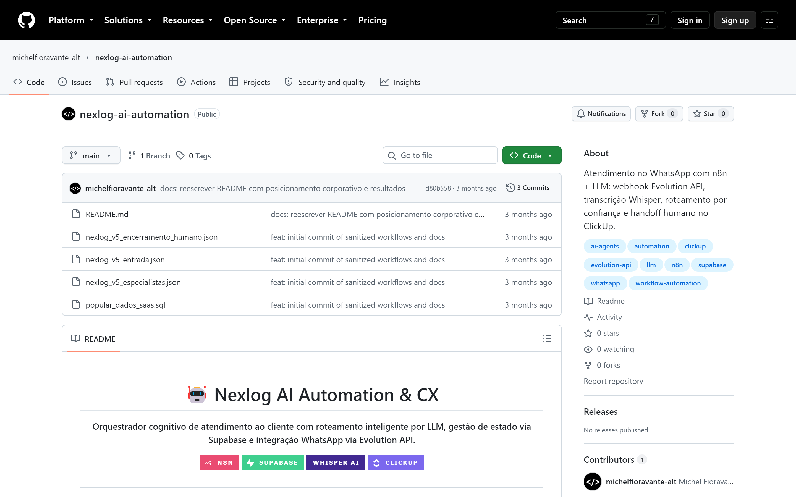

Processos
Diagnóstico, mapeamento e redesenho de fluxos — do problema à solução que o time consegue sustentar.
Analista de Automação e Processos
Sistemas em produção · vagas remotas
Diagnóstico, mapeamento e redesenho de fluxos — do problema à solução que o time consegue sustentar.
Workflows em n8n, integrações e agentes com LLM, com handoff humano quando a confiança cai.
Apps em React/Next.js + Supabase (Auth, RLS, regras no banco) em uso real.

SaaS · INPI
Plataforma de gestão com kanban e indicadores. Eficiência de 48% → 61% em 3 meses.

Web app
CRM B2B com Auth, RLS por perfil e OCR. Em uso por ~30 pessoas.

Automação
Atendimento com n8n + LLM. Primeira resposta de ~4h → ~45s.
Analista de Automação e Processos — o meio-termo entre entender o fluxo e construir a automação/sistema que resolve. MBA em Engenharia de Processos (PUCRS). Busco vagas remotas / home office.
n8n · Supabase · PostgreSQL · React · Next.js · TypeScript · BPMN · Power BI
Sapucaia do Sul, RS · Remoto